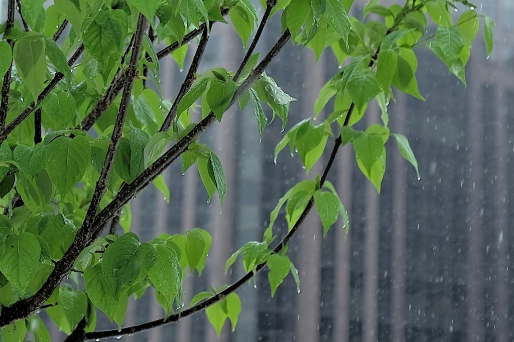
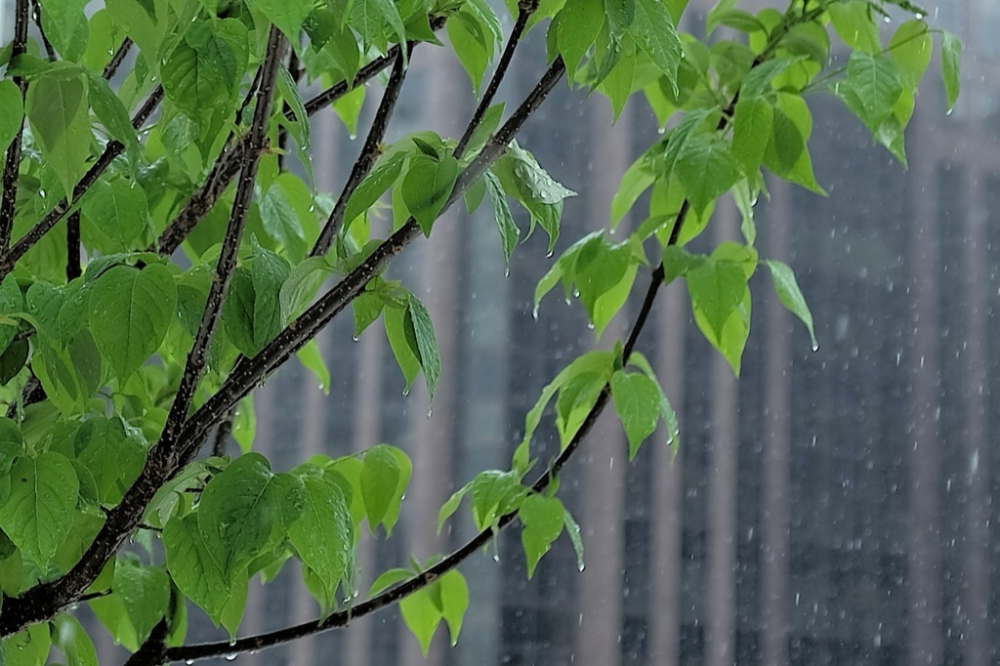
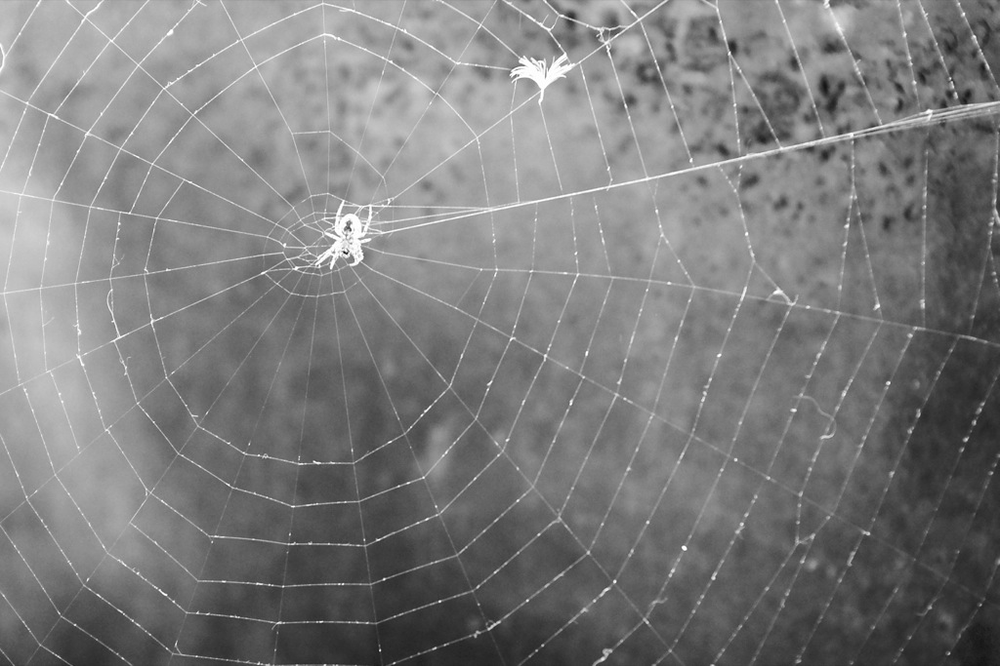
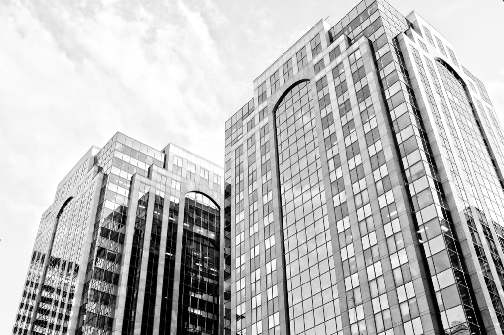
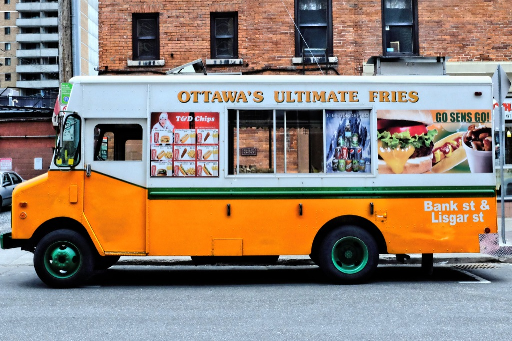

Day 9

Taken May 16th, 2014
Ottawa, Canada
Fuji X100s 23mm 1/1000 @ f/2.7 ISO 200
Taken May 16th, 2014 Ottawa, Canada Fuji X100s 23mm 1/1000 @ f/2.7 ISO 200...
Photo-a-day by Matt Thompson started May 8th, 2014.

Taken May 16th, 2014
Ottawa, Canada
Fuji X100s 23mm 1/1000 @ f/2.7 ISO 200

Taken May 15th, 2014
Ottawa, Canada
Fuji X100s 23mm 1/60 @ f/2.7 ISO 1250

Taken May 14th, 2014
Ottawa, Canada
Fuji X100s 23mm 1/250 @ f/5.6 ISO 2500

Taken May 13th, 2014
Ottawa, Canada
Fuji X100s 23mm 1/250 @ f/2.7 ISO 3200

Taken May 12th, 2014
Ottawa, Canada
Fuji X100s 23mm 1/320 @ f/10 ISO 3200

Taken May 11th, 2014
Ottawa, Canada
Fuji X100s 23mm 1/20 @ f/2.7 ISO 2000
Taken May 10th, 2014
Ottawa, Canada
Fuji X100s 23mm 1/1000 @ f/5.6 ISO 200
Taken May 9th, 2014
National Day of Honour
Ottawa, Canada
Fuji X100s 23mm 1/250 @ f/5.6 ISO 200
Taken May 8th, 2014
Ottawa, Canada
I chose a good day to bring my camera along. This is a Canadian